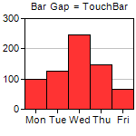
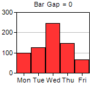
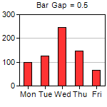
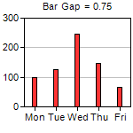
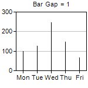

This example demonstrates the effects of different bar gaps configured using BarLayer.setBarGap.
ChartDirector 7.1 (C++ Edition)
Bar Gap





Source Code Listing
#include "chartdir.h"
#include <stdio.h>
void createChart(int chartIndex, const char *filename)
{
char buffer[1024];
double bargap = chartIndex * 0.25 - 0.25;
// The data for the bar chart
double data[] = {100, 125, 245, 147, 67};
const int data_size = (int)(sizeof(data)/sizeof(*data));
// The labels for the bar chart
const char* labels[] = {"Mon", "Tue", "Wed", "Thu", "Fri"};
const int labels_size = (int)(sizeof(labels)/sizeof(*labels));
// Create a XYChart object of size 150 x 150 pixels
XYChart* c = new XYChart(150, 150);
// Set the plotarea at (27, 20) and of size 120 x 100 pixels
c->setPlotArea(27, 20, 120, 100);
// Set the labels on the x axis
c->xAxis()->setLabels(StringArray(labels, labels_size));
if (bargap >= 0) {
// Add a title to display to bar gap using 8pt Arial font
sprintf(buffer, " Bar Gap = %g", bargap);
c->addTitle(buffer, "Arial", 8);
} else {
// Use negative value to mean TouchBar
c->addTitle(" Bar Gap = TouchBar", "Arial", 8);
bargap = Chart::TouchBar;
}
// Add a bar chart layer using the given data and set the bar gap
c->addBarLayer(DoubleArray(data, data_size))->setBarGap(bargap);
// Output the chart
c->makeChart(filename);
//free up resources
delete c;
}
int main(int argc, char *argv[])
{
createChart(0, "gapbar0.png");
createChart(1, "gapbar1.png");
createChart(2, "gapbar2.png");
createChart(3, "gapbar3.png");
createChart(4, "gapbar4.png");
createChart(5, "gapbar5.png");
return 0;
}